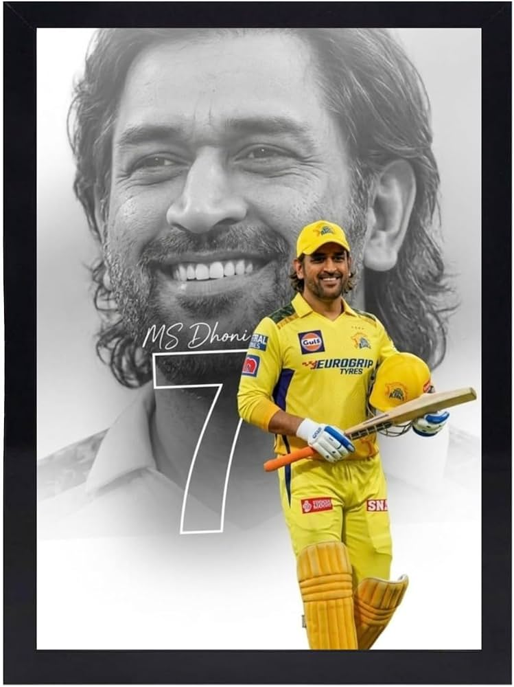

Mahendra Singh Dhoni, widely known as MS Dhoni, is one of India’s most admired cricketers. Born in Ranchi, Jharkhand, he rose from a small-town background to become an international icon. Dhoni is celebrated for his calm presence, sharp cricketing judgment, and ability to handle pressure. As a wicketkeeper-batter and captain, he helped lead Indian cricket through an era of memorable victories. His journey inspires young athletes to work hard, stay focused, and believe in their abilities. Beyond the trophies, Dhoni is respected for his humility, discipline, and confidence, qualities that have made him a beloved figure among fans across generations.
MS Dhoni is known for combining the skills of a dependable wicketkeeper with those of a powerful middle-order batter. His composed style earned him the nickname “Captain Cool,” while his quick decisions behind the stumps made him a presence on the field. Dhoni often backed younger players and encouraged his team to remain confident during difficult moments. His trademark finishing ability, especially in limited-overs cricket, thrilled supporters. Away from the pitch, he is admired for his understated personality and strong connection with his hometown, Ranchi. Together, these qualities have shaped his reputation as both a sporting leader and role model.
Dhoni made his International debut in 2004 and soon became a key member of India’s team. He took on the captaincy across formats and led the side with a practical, composed approach. Under his leadership, India won the inaugural ICC Men’s T20 World Cup in 2007, then lifted the ICC Cricket World Cup in 2011. He also guided India to the ICC Champions Trophy title in 2013. Dhoni continued representing India in international cricket until announcing his retirement in 2020. Across his career, he became known for steady leadership, smart tactical choices, and finishing important matches with confidence and composure.
MS Dhoni’s achievements include leading India to victories in three major ICC limited-overs tournaments: the 2007 T20 World Cup, the 2011 Cricket World Cup, and the 2013 Champions Trophy. The 2011 final became especially memorable when Dhoni finished the chase with a six, securing India’s first World Cup title in 28 years. He also captained India to the top of the Test rankings during his tenure. For his contribution to sport, the Government of India awarded him the Padma Shri in 2009 and the Padma Bhushan in 2018. His record reflects skill, resilience, and a lasting influence on Indian cricket.